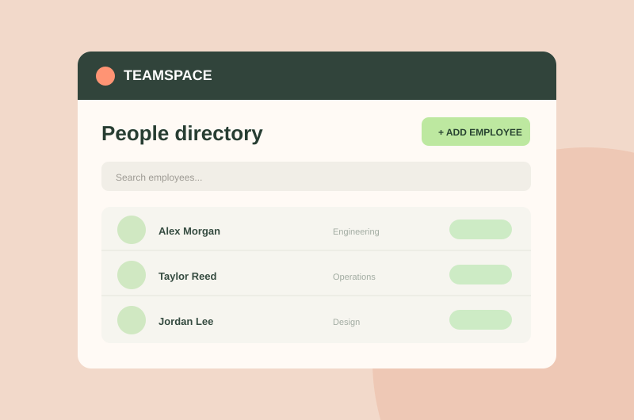
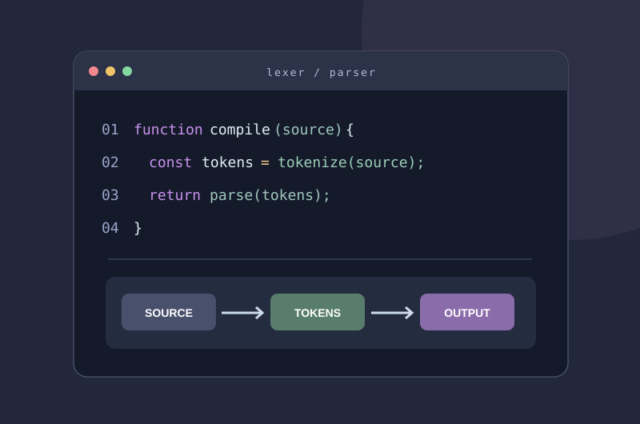
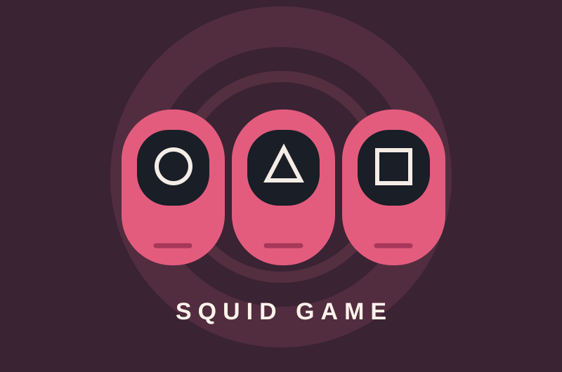
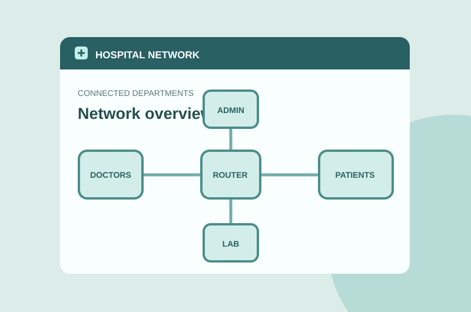
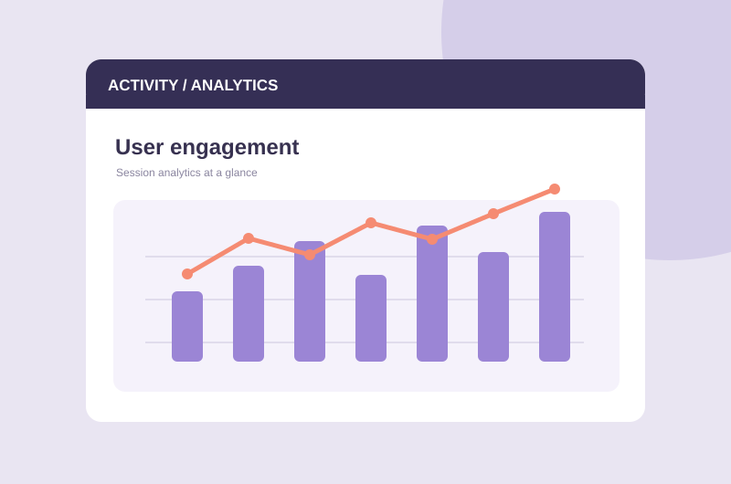

Featured · Live
Domestic Bot Dashboard
An AI-assisted robot control interface designed for a science-museum interactive experience.
AI / RoboticsReactUI / UX
From Java applications to interactive experiences. A look at the things I've worked on and the subjects I keep exploring.
An AI-assisted robot control interface designed for a science-museum interactive experience.

A Java academic application centered on garment-industry operations and software workflow design.

A software project focused on organizing employee information and practical management workflows.

Coursework exploring the principles and stages behind compiler design.

A game-themed Java project built as part of hands-on programming practice.

A computer-networking and systems concept exploring connected hospital departments and structured access.

A project exploration centered on user activity, interaction data and clear information display.
The Hospital Management System and User Activity Tracker are included as project overviews; repository URLs were not supplied. For public source code, visit my GitHub profile.
I'm interested in developing my research skills across blockchain, AI and practical computing. Research interests are listed here without claiming any paper publications.